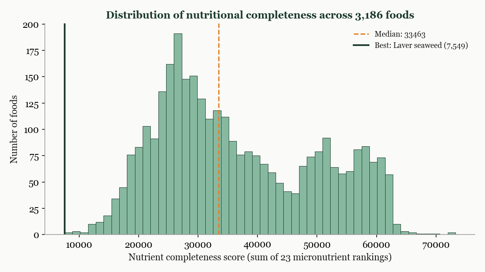
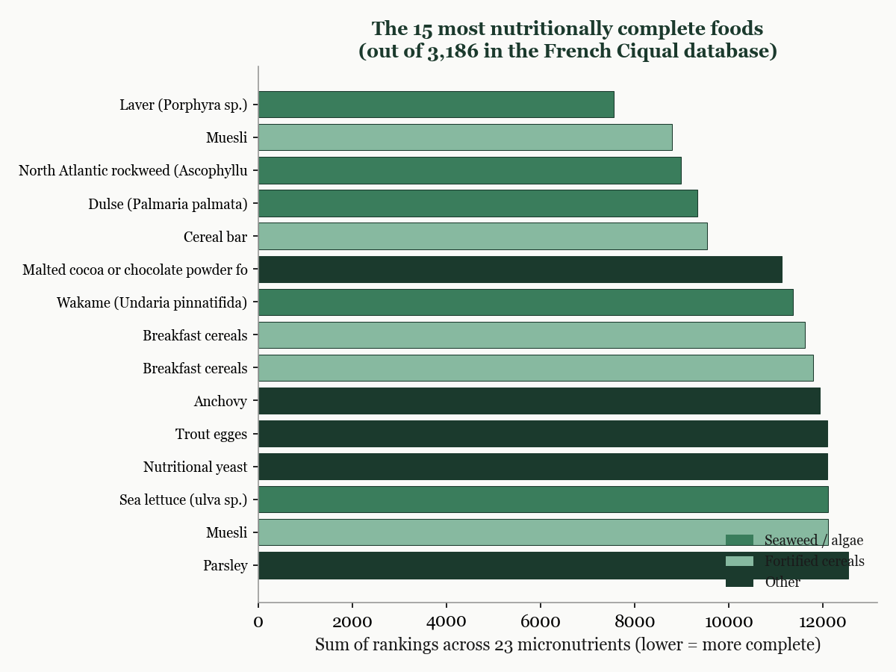
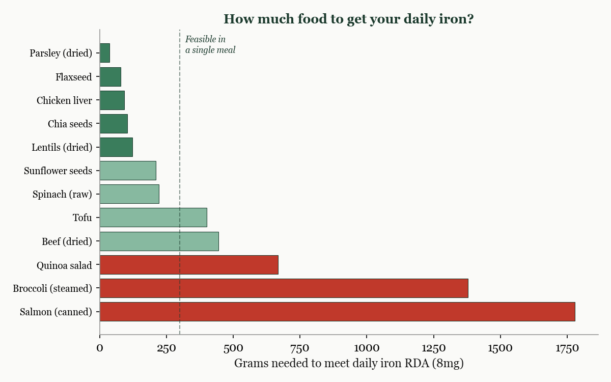
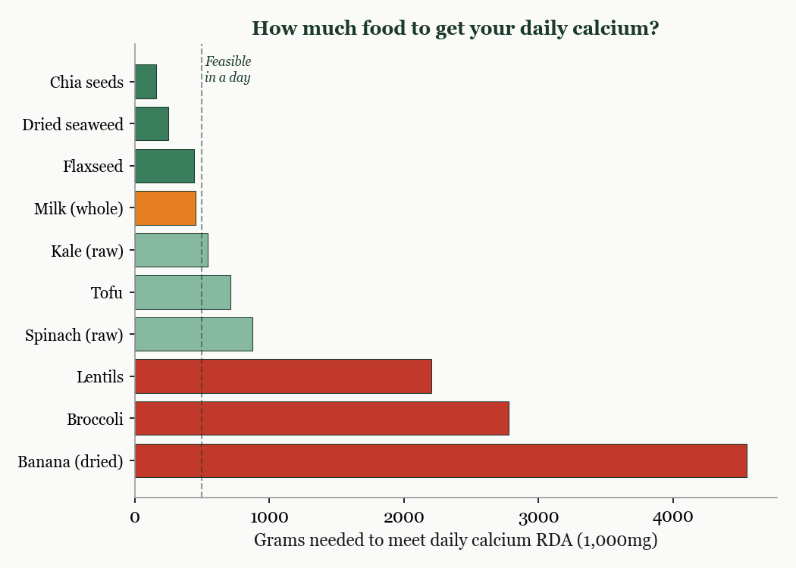
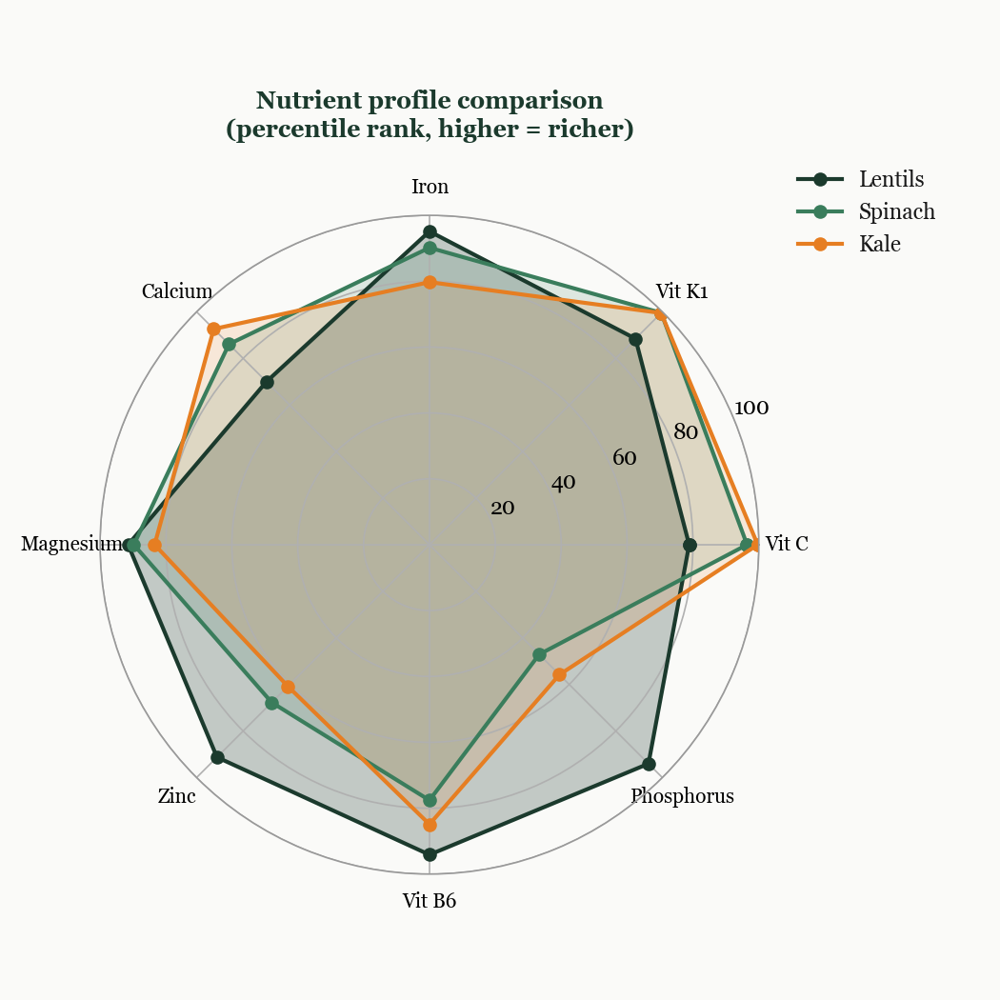
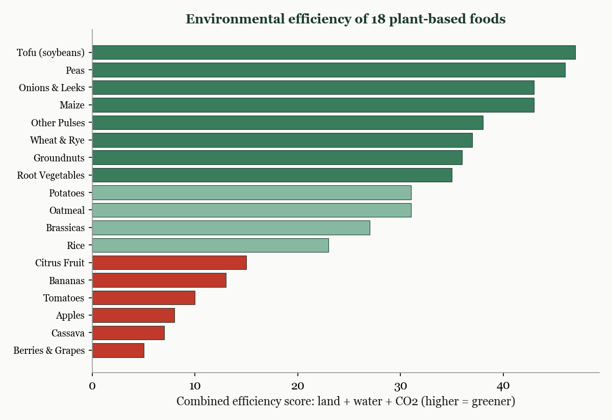

What if you could rank every food by how much nutrition it packs per gram? Not just calories, but the full spectrum: twenty-three vitamins and minerals, measured against what an adult actually needs each day. And then, separately, rank those foods by their environmental cost: land use, water consumption, and carbon emissions. Where those two rankings overlap is the efficient frontier of food.
I pulled 3,186 foods from the French Ciqual nutrition database and ranked each one across 23 micronutrients against the recommended daily allowance for an adult male. I also compiled environmental impact data for 18 common plant-based foods from Our World in Data. What follows is what fell out.
For each of the 3,186 foods, I calculated a simple question for every micronutrient: how many grams of this food would you need to eat to hit your full daily requirement? A food that delivers your entire daily iron in 36 grams ranks higher than one that needs 1,800 grams. I then summed each food's rank across all 23 nutrients. The lower the total score, the more nutritionally complete the food.
This is deliberately crude. It ignores bioavailability (how well your body actually absorbs the nutrient), interactions between nutrients, and the obvious fact that nobody eats a single food exclusively. But as a first-pass filter for identifying the most nutrient-dense foods on the planet, it works surprisingly well.

The single most nutritionally complete food in the database is laver, a type of dried seaweed used in Welsh and Japanese cooking. It scores well across nearly every micronutrient simultaneously, which is unusual. Most foods are rich in a handful of nutrients and poor in others. Seaweeds are the exception.
In fact, seaweeds dominate the top fifteen. Laver, rockweed, dulse, wakame, and sea lettuce all appear. The other consistent performers are fortified breakfast cereals (which is almost cheating, since the nutrients are added industrially) and a few outliers: nutritional yeast, anchovy fillets, and trout eggs.

The seaweed result is not a statistical artefact. Dried seaweed is genuinely rich in iodine, iron, calcium, magnesium, B vitamins, and vitamin K, all in a concentrated form. The reason it does not appear on most people's plates is cultural, not nutritional.
One of the most useful outputs of the analysis is the "grams needed" calculation for specific nutrients. Iron is a good example because deficiency is common and the best sources are not always obvious.
Dried parsley is the most iron-dense food in the database: 36 grams covers your entire daily requirement. Flaxseed needs 78 grams. Chicken liver needs 92. Lentils need 123. These are all feasible in a single meal.
At the other end, salmon needs nearly 1,800 grams to hit the same target. That is about four entire fillets. Broccoli needs 1,400 grams. These are healthy foods, but they are not efficient sources of iron.

Calcium reveals a pattern that contradicts conventional wisdom. Milk is often presented as the default calcium source, and it is decent: 455 grams (roughly two large glasses) covers the daily requirement. But it is not the best.
Chia seeds need only 158 grams. Dried seaweed needs 250. Flaxseed needs 439. Kale needs 541 grams raw, which sounds like a lot but shrinks dramatically when cooked. Meanwhile, broccoli needs nearly 2,800 grams and bananas need over 4,500. Calcium content varies enormously across foods that people often assume are interchangeable.

A food can be excellent for one nutrient and mediocre for another. The radar chart below compares three foods that are often grouped together as "healthy greens and legumes": lentils, spinach, and kale.
Lentils dominate on phosphorus and zinc but are weak on vitamin C. Kale is exceptional for vitamin C and vitamin K but average for iron. Spinach sits in the middle on most nutrients but has no single dominant strength. If you ate only one of these three, lentils would cover the widest range. But the real insight is that combining them covers gaps that none can fill alone.

Nutritional density is only half the question. A food can be nutrient-rich but environmentally expensive. Using data from Our World in Data, I ranked 18 common plant-based foods across three environmental metrics: land use, water consumption, and CO2 emissions.
Tofu (from soybeans) scores highest overall. It uses relatively little land, moderate water, and produces low emissions per unit of food. Peas and maize are close behind. At the bottom of the environmental ranking are berries and grapes, which require significant land, and cassava, which has a high carbon footprint relative to its output.

The foods that appear in both the nutritional and environmental top tiers, lentils, peas, tofu, oats, and seeds, are the closest thing to an objectively efficient diet. They deliver broad micronutrient coverage with minimal environmental cost. The fact that most traditional cuisines independently converged on some version of "beans, grains, and greens" is not a coincidence. It is a solution that human cultures discovered empirically long before anyone ran the numbers.
This analysis does not prescribe a diet. It cannot account for taste, culture, availability, cost, or the thousand other factors that determine what people actually eat. What it does is make the trade-offs visible.
A handful of dried seaweed is more nutritionally complete than a steak. A tablespoon of chia seeds delivers more calcium than a glass of milk. Dried parsley is the single most iron-dense food in a database of three thousand. These facts do not mean you should eat only seaweed and seeds. They mean that when you think about nutrition, the intuitive hierarchy, meat for protein, milk for calcium, oranges for vitamin C, is not wrong, but it is incomplete in ways that the data makes obvious.
The best analytical work does not tell people what to do. It shows them what they are choosing between.